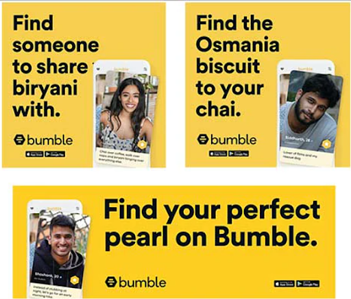

Bumble, the women-first dating and social networking app, launched its new out-of-home campaign that captures nuanced dating cultures in cities including Kolkata and Ahmedabad. Ahead of the festival season, Bumble’s latest OOH campaign aims to support the community to navigate their dating journeys and encourage women to make the first move for initiating the conversion.
The new OOH campaign takes a humorous, city-specific, hyper-localised look at nuanced dating cultures during festivals featuring taglines such as “Find the Kasundi to your Kabiraji”, “Find a Pujo date who’ll go, “Asche Bochor Abar Hobe'' with you” in Kolkata and “You, me, and gwalia dosa at Manek Chowk”, “Find the double butter to your vada pav. Date on Bumble.” in Ahmedabad.
-
Ahmedabad Poster:
-
Hyderabad Poster:

Samarpita Samaddar, India Communications Director, Bumble said:
“After two years of restrictions and lockdowns, this year, people are gearing up to celebrate the festivals in a big way. From sharing your idea of festive fun and your favorite festival food, puja pandals you’d like to visit, a garba dance you’ve been eyeing to attend–festivals can be an exciting time to find new connections that you’re looking for! With our latest campaign, we aim to encourage our community to own their dating journeys and find their connections on Bumble.”
Over the past two years, Bumble has introduced a number of product and policy changes to best support its community. This included new features to navigate virtual dating, Audio Prompts and Videos on Profile, Audio Notes, in-app Covid-19 preferences to easily communicate how people are comfortable dating and 150 new interest badges in dating profiles to showcase your hobbies and interests easily.
Sailesh Muthu, CEO of AdMAVIN- Pioneer Ad Tech company appreciated the eye-catching tag-lines used in the OOH campaign for attracting the youths in the festive occasions.
In addition to it, he said that the OOH campaign planning would have contributed more to bumble with the help of AdMAVIN Tool, as it would have helped them to find out pin-code wise population density in a new cities and target group influence area with estimated impression numbers which cloud have made the campaign planning process easier.